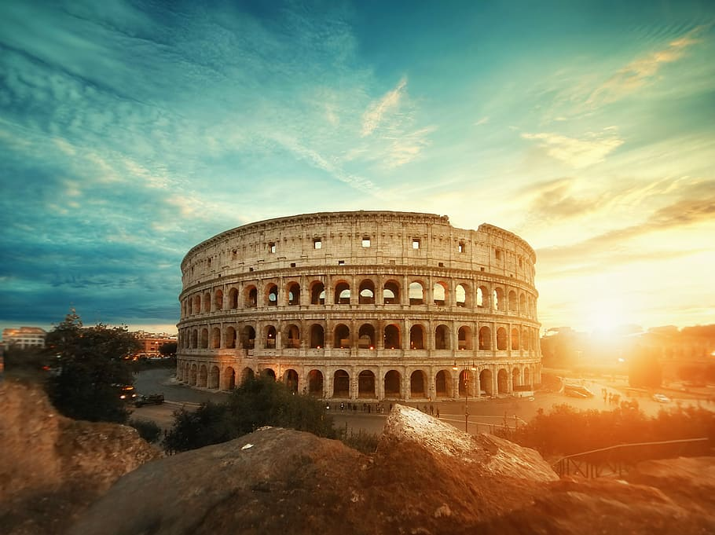

Great Wall of China

The Great Wall of China adalah serangkaian benteng yang terbuat dari batu, bata, tanah yang dipadatkan, kayu, dan bahan lainnya, umumnya dibangun sepanjang garis timur-barat di sepanjang perbatasan utara sejarah Tiongkok untuk melindungi negara-negara dan kekaisaran Tiongkok dari serangan dan invasi berbagai kelompok nomaden.
Petra

Petra adalah kota sejarah dan arkeologi di selatan Yordania, terkenal dengan arsitektur batu yang dipahat dan sistem saluran airnya. Kota ini adalah ibu kota Kerajaan Nabatea, dan sekarang merupakan Situs Warisan Dunia UNESCO.
Christ the Redeemer

Christ the Redeemer adalah patung Art Deco Yesus Kristus di Rio de Janeiro, Brasil. Patung ini terletak di puncak gunung Corcovado setinggi 700 meter di Taman Nasional Hutan Tijuca yang menghadap kota.
Machu Picchu

Machu Picchu adalah benteng kota Inka abad ke-15 yang terletak di Cordillera Timur selatan Peru pada punggungan gunung setinggi 2.430 meter di atas permukaan laut. Kota ini terletak di Distrik Machupicchu di Provinsi Urubamba di atas Lembah Suci, yang berjarak 80 kilometer dari Cuzco.
Chichen Itza

Chichen Itza adalah kota pra-Columbus yang besar yang dibangun oleh orang Maya pada periode Klasik Terminal. Situs arkeologi ini terletak di Munisipalitas Tinúm, Negara Bagian Yucatán, Meksiko.
Roman Colosseum
The Colosseum, juga dikenal sebagai Amphitheatre Flavian, adalah amfiteater oval di pusat kota Roma, Italia. Dibangun dari batu kapur travertin, tuf (batuan vulkanik), dan beton berlapis bata, itu adalah amfiteater terbesar yang pernah dibangun pada masanya dan menampung 50.000 hingga 80.000 penonton.
Taj Mahal

The Taj Mahal iadalah mausoleum marmer putih gading di tepi kanan sungai Yamuna di kota Agra, India. Dibangun pada tahun 1631 oleh kaisar Mughal, Shah Jahan, untuk menampung makam istri kesayangannya, Mumtaz Mahal. Ini juga mengandung makam Shah Jahan sendiri.